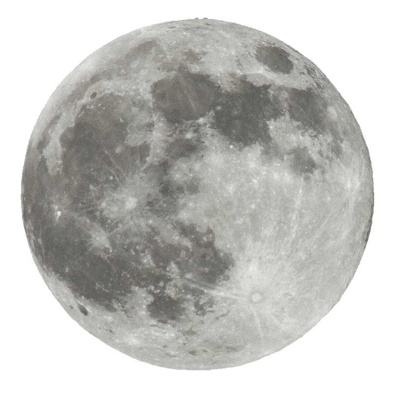

START
STOP
이곳은 지구, 생명체가 살아 숨쉬는 곳.
지구Earth는 태양으로부터 세 번째 행성이다.
45억 6700만 년 전 형성되었으며,
용암 활동이 활발했던 지구와 행성 테이아의 격렬한 충돌로 생성되었을 달을 위성으로 둔다.
지구의 중력은 우주의 다른 물체, 특히 태양과 지구의 유일한 자연위성인 달과 상호작용한다.
지구와 달 사이의 중력 작용으로 조석 현상이 발생한다.
지금은 생명체들이 살아 숨쉬는 곳이지만,
미래는 아무도 모른다.

우주로 돌아가려면 로켓으로 돌아가세요